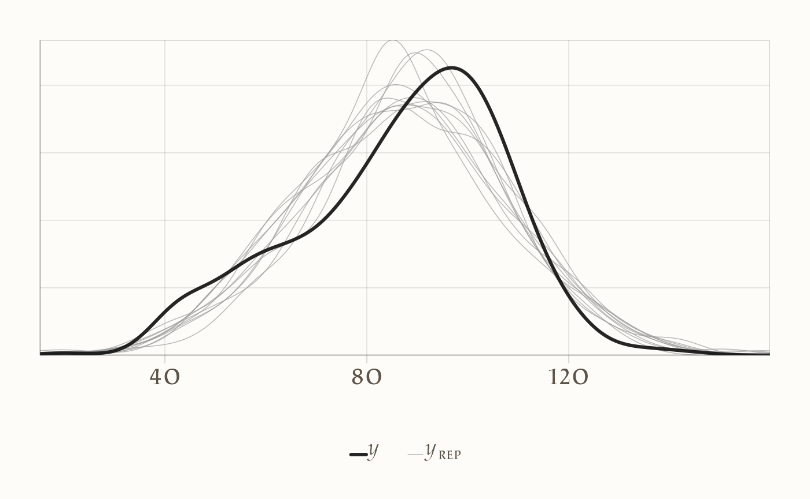
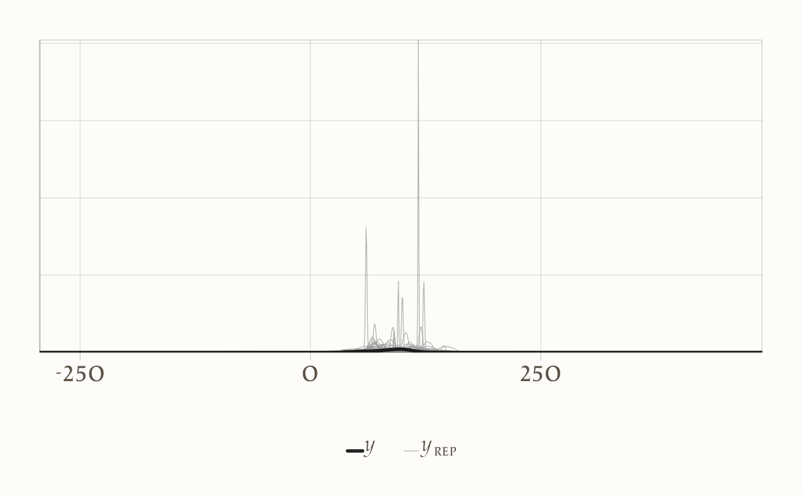

here::here("code", "_common.R") |>
source()
# Load packages
if (!requireNamespace("pacman")) install.packages("pacman")
pacman::p_load(cmdstanr, posterior, brms, bayestestR, insight)
conflicts_prefer(loo::loo)67 Confronto tra le medie di due gruppi
“La domanda non è”è la differenza reale?“, ma piuttosto”quanto è grande la differenza, e di quanto siamo certi?”
– Jeffrey Rouder, Psicologo e Statistico, esperto di statistica bayesiana
Introduzione
Una delle domande di ricerca più comuni in psicologia è il confronto tra due gruppi o condizioni. Ci chiediamo, ad esempio, se un gruppo di trattamento ottiene risultati migliori di un gruppo di controllo, o se un campione clinico differisce significativamente da un campione non clinico in una data misura. In questi casi, la domanda cruciale non è solo se esista una differenza, ma anche di quale ampiezza essa sia e con quale grado di incertezza.
Questo capitolo affronta questo problema usando un’inferenza bayesiana per confrontare due medie. Immaginiamo di avere una variabile risultato continua, che indichiamo con \(y_{ig}\) per l’osservazione \(i\) nel gruppo \(g\) (dove \(g\) può essere 0 o 1). Un modello statistico semplice e diretto per questa situazione assume che i punteggi seguano una distribuzione normale, ciascuno con la propria media di gruppo:
\[ y_{ig}\sim\mathcal N(\mu_g,\ \sigma), \qquad \Delta=\mu_1-\mu_0 , \]
La quantità di interesse centrale qui è \(\Delta\), che rappresenta proprio la differenza tra le due medie. Questo stesso modello può essere espresso in modo equivalente come un modello di regressione lineare semplice, usando una variabile indicatrice (\(x_i\)) che codifica l’appartenenza al gruppo (0 o 1):
\[ y_i \sim \mathcal N(\alpha+\beta x_i,\ \sigma), \]
In questa formulazione, l’intercetta \(\alpha\) corrisponde alla media del gruppo di riferimento (\(\mu_0\)), mentre il coefficiente \(\beta\) rappresenta la differenza tra le due medie (\(\Delta\)). Quando il contesto lo richiede, considereremo anche la versione standardizzata di questo effetto, cioè \(d = \Delta / \sigma\), che fornisce una misura della dimensione dell’effetto indipendente dalla scala di misura originale.
Rispetto all’approccio frequentista tradizionale, che si concentra principalmente sul calcolo di un p-value, l’inferenza bayesiana offre diversi vantaggi pratici e concettuali. Permette infatti di ottenere una distribuzione a posteriori completa per la differenza \(\Delta\), che quantifica in modo diretto e intuitivo tutta la nostra incertezza sulla stima dopo aver visto i dati. Da questa distribuzione possiamo calcolare probabilità direttamente interpretabili, come la probabilità che la differenza sia positiva \(\Pr(\Delta>0\mid\text{dati})\), o, ancor più importante, la probabilità che l’effetto superi una soglia di rilevanza pratica prestabilita \(\Pr(|\Delta|>\text{SESOI}\mid\text{dati})\). Inoltre, il quadro bayesiano rende del tutto trasparente l’integrazione di conoscenze pregresse (attraverso la scelta delle prior) e obbliga a rendere esplicite tutte le assunzioni su cui il modello si basa.
Il percorso che seguiremo in questo capitolo è semplice e strutturato. Inizieremo specificando il modello bayesiano per il confronto tra due medie, esplorandone anche varianti più robuste nel caso in cui l’assunzione di normalità risulti troppo restrittiva. Sceglieremo poi delle prior debolmente informative, che siano coerenti con la scala di misura della nostra variabile risultato e che permettano ai dati di “parlare” in modo predominante. Una volta stimato il modello, il focus sarà sul riportare le quantità di interesse—la differenza \(\Delta\) e l’eventuale dimensione dell’effetto standardizzata \(d\)—accompagnate dalle loro distribuzioni a posteriori e dalle probabilità rilevanti. Infine, valuteremo l’adeguatezza del nostro modello attraverso verifiche predittive, per assicurarci che sia in grado di generare dati simili a quelli osservati, e, se necessario, confronteremo modelli con assunzioni diverse per scegliere quello che meglio cattura la struttura dei nostri dati.
Panoramica del capitolo
- Le basi concettuali e statistiche che sottendono la modellazione della differenza tra medie nell’ambito del modello di regressione lineare bayesiana.
- Le diverse strategie di codifica del predittore categoriale (dummy, centrata, a medie di cella).
- Le strategie più efficaci per comunicare i risultati attraverso intervalli credibili e previsioni probabilistiche.
67.1 Il modello a indicatore e le quantità di interesse
Per confrontare due gruppi in modo rigoroso, utilizziamo un modello statistico che incorpora un predittore binario, \(x_i\), il cui valore (0 o 1) indica l’appartenenza a uno dei due gruppi. Il modello lineare che proponiamo è il seguente:
\[ y_i = \alpha + \beta x_i + \varepsilon_i, \qquad \varepsilon_i \sim \mathcal{N}(0, \sigma), \]
dove il termine \(\varepsilon_i\) rappresenta l’errore residuo, la parte di variabilità del punteggio \(y_i\) che il modello non riesce a spiegare. Un’assunzione fondamentale di questo modello base è che la dispersione di questi residui, misurata dalla deviazione standard \(\sigma\), sia la stessa per entrambi i gruppi. Questa condizione è nota come ipotesi di omoschedasticità.
Le quantità centrali che vogliamo stimare—le medie dei due gruppi—sono ricavabili direttamente dai parametri del modello. Sostituendo i valori dell’indicatore, otteniamo:
- L’attesa per il gruppo di riferimento (quando \(x_i = 0\)) è: \(\mathbb{E}[y \mid x=0] = \alpha\). Chiamiamo questo valore \(\mu_0\).
- L’attesa per il gruppo di confronto (quando \(x_i = 1\)) è: \(\mathbb{E}[y \mid x=1] = \alpha + \beta\). Chiamiamo questo valore \(\mu_1\).
La differenza tra le due medie, che è la quantità di interesse primaria, risulta quindi essere esattamente il coefficiente \(\beta\):
\[ \Delta = \mu_1 - \mu_0 = (\alpha + \beta) - \alpha = \beta. \]
In sintesi, l’interpretazione dei parametri è molto intuitiva:
- Il parametro \(\alpha\) (l’intercetta) rappresenta la media del gruppo di riferimento.
- Il parametro \(\beta\) (la pendenza) rappresenta la differenza media tra il gruppo di confronto e il gruppo di riferimento.
- Il parametro \(\sigma\) rappresenta la variabilità residua comune all’interno di ciascun gruppo, assumendo che sia omogenea.
Una prospettiva alternativa: il modello a medie di cella
Lo stesso modello può essere formulato in un modo che rende ancora più esplicite le medie di gruppo. Invece di esprimerlo come una funzione lineare, possiamo scriverlo direttamente specificando la media per ogni cella:
\[ y_i \sim \mathcal{N}(\mu_{x_i},\, \sigma), \]
dove \(\mu_{x_i}\) è semplicemente la media del gruppo a cui l’osservazione \(i\)-esima appartiene. In pratica, questo significa che se \(x_i = 0\), allora \(y_i \sim \mathcal{N}(\mu_0, \sigma)\), e se \(x_i = 1\), allora \(y_i \sim \mathcal{N}(\mu_1, \sigma)\).
Questa parametrizzazione è del tutto equivalente a quella con \(\alpha\) e \(\beta\), con la semplice corrispondenza \(\mu_0 = \alpha\) e \(\mu_1 = \alpha + \beta\). La sua utilità risiede nel fatto che rende immediatamente visibili i parametri di interesse diretto (\(\mu_0\) e \(\mu_1\)) ed è spesso più semplice da comprendere concettualmente.
67.2 La codifica centrata dell’indicatore
Un’accortezza tecnica ma molto utile nella modellazione consiste nel centrare la variabile indicatrice. Invece di usare i valori 0 e 1, possiamo ridefinirla sottraendo 0.5, ottenendo così:
\[ x_c = x - \tfrac12 \in \left\{-\tfrac12,\ +\tfrac12\right\}. \]
Il modello di regressione viene quindi riscritto utilizzando questo predittore centrato:
\[ y_i = \alpha_c + \beta_c \, x_{c,i} + \varepsilon_i. \]
Questa piccola modifica altera in modo vantaggioso l’interpretazione dei coefficienti:
- Il parametro \(\alpha_c\) (l’intercetta) non è più la media del gruppo di riferimento, bensì la media generale (o grand mean) dei due gruppi, calcolata come \((\mu_0 + \mu_1)/2\).
- Il parametro \(\beta_c\) (la pendenza) rimane invece esattamente la differenza tra le due medie (\(\mu_1 - \mu_0\)), proprio come nel caso della codifica non centrata.
67.2.1 Vantaggi pratici della codifica centrata
Questa parametrizzazione alternativa offre diversi vantaggi pratici:
- Interpretazione immediata dell’intercetta: L’intercetta \(\alpha_c\) rappresenta direttamente la media complessiva del campione, una quantità spesso utile da riportare.
- Semplicità nella specifica delle prior: Risulta più intuitivo e diretto specificare distribuzioni a priori per i parametri. Possiamo scegliere una prior per \(\alpha_c\) basata sulla nostra conoscenza del livello medio generale della variabile \(y\) nella popolazione, e una prior separata per \(\beta_c\) basata sull’ampiezza dell’effetto che ci aspettiamo o che riteniamo rilevante.
- Stima più efficiente in modelli complessi: Nei modelli gerarchici più avanzati, la centratura può spesso ridurre la correlazione tra le stime dei parametri, migliorando l’efficienza del campionatore MCMC e facilitando la convergenza.
Suggerimento operativo: La scelta tra la codifica standard (0/1) e quella centrata dipende dagli obiettivi dell’analisi.
- Utilizza la codifica centrata quando l’attenzione è primariamente sulla differenza \(\beta\) e quando vuoi riportare in modo trasparente la media complessiva.
- Utilizza la forma a “medie di cella” (o la codifica 0/1) quando è più conveniente o interpretabile stimare direttamente i livelli medi \(\mu_0\) e \(\mu_1\) per ciascun gruppo.
67.3 Stima con brms
Di seguito mostriamo tre modi equivalenti per stimare la differenza tra due gruppi con brms. Per ogni blocco indichiamo: cosa fa il modello, come leggere i coefficienti, quali quantità riportare.
67.3.1 1) Codifica dummy \(x\in\{0,1\}\) (modello “standard”)
Idea. Stimiamo \(\alpha\) (media del gruppo \(x=0\)) e \(\beta\) (differenza \(\mu_1-\mu_0\)). Le prior student_t(3, 0, 10) sono debolmente informative: centrano i parametri a 0 e consentono ampia variabilità (code più pesanti della normale).
#| message: false
# install.packages(c("brms","posterior","tidyverse","bayestestR","loo","cmdstanr"))
library(brms); library(posterior); library(tidyverse); library(bayestestR); library(loo)
fit <- brm(
y ~ 1 + x, # Intercetta + indicatrice (0/1)
data = df,
family = gaussian(),
prior = c(
prior(student_t(3, 0, 10), class = "Intercept"), # prior su α (media gruppo 0)
prior(student_t(3, 0, 10), class = "b"), # prior su β (differenza)
prior(student_t(3, 0, 10), class = "sigma") # prior su σ (half-t implicita)
),
backend = "cmdstanr",
chains = 4, iter = 2000, seed = 123
)Come leggere i risultati.
b_Interceptstima \(\mu_0\).b_xstima \(\Delta=\mu_1-\mu_0\).sigmaè la deviazione standard comune. Calcoliamo anche \(d=\Delta/\sigma\) e due probabilità a posteriori utili: \(\Pr(\Delta>0)\) e \(\Pr(|\Delta|>\text{SESOI})\).
draws <- as_draws_df(fit)
post <- draws %>%
transmute(
mu0 = b_Intercept, # = α
mu1 = b_Intercept + b_x, # = α + β
delta = b_x, # = β
sigma = sigma,
d = delta / sigma # effetto standardizzato (pooled)
)
posterior::summarise_draws(post[, c("mu0","mu1","delta","d","sigma")])
SESOI <- 5 # definita a priori in base al contesto applicativo
c(
P_delta_gt0 = mean(post$delta > 0),
P_delta_gtS = mean(abs(post$delta) > SESOI)
)Cosa riportare nel testo: media e intervallo credibile per \(\mu_0,\mu_1,\Delta,d\); \(\Pr(\Delta>0)\); \(\Pr(|\Delta|>\text{SESOI})\).
67.3.2 2) Codifica centrata \(x_c=x-\tfrac12\)
Idea. L’intercetta diventa la grand mean \((\mu_0+\mu_1)/2\); il coefficiente su \(x_c\) è direttamente \(\Delta\). Le prior sono normali (comode quando interpretiamo \(\alpha\) come media complessiva).
df <- df %>% mutate(xc = x - 0.5) # xc ∈ {-0.5, +0.5}
fit_c <- brm(
y ~ 1 + xc,
data = df,
family = gaussian(),
prior = c(
prior(normal(0, 10), class = "Intercept"), # prior su grand mean
prior(normal(0, 10), class = "b"), # prior sulla differenza
prior(student_t(3, 0, 10), class = "sigma")
),
backend = "cmdstanr",
chains = 4, iter = 2000, seed = 123
)
draws_c <- as_draws_df(fit_c)
post_c <- draws_c %>%
transmute(
grand_mean = b_Intercept, # = (μ0+μ1)/2
delta = b_xc, # = μ1 - μ0
mu0 = b_Intercept - 0.5*b_xc, # ricostruzione
mu1 = b_Intercept + 0.5*b_xc,
sigma = sigma,
d = delta / sigma
)
posterior::summarise_draws(post_c[, c("grand_mean","mu0","mu1","delta","d","sigma")])Quando usarla: quando vuoi dare prior separate e intuitive su media complessiva e differenza.
67.3.3 3) Medie di cella (senza intercetta)
Idea. Stimiamo direttamente \(\mu_0\) e \(\mu_1\). Vantaggio: puoi assegnare prior indipendenti sulle due medie.
df <- df %>% mutate(group = factor(x, levels = c(0,1), labels = c("G0","G1")))
fit_cells <- brm(
y ~ 0 + group, # niente intercetta: i coefficienti SONO le medie
data = df, family = gaussian(),
prior = c(
prior(normal(0, 10), class = "b", coef = "groupG0"), # prior su μ0
prior(normal(0, 10), class = "b", coef = "groupG1"), # prior su μ1
prior(student_t(3, 0, 10), class = "sigma")
),
backend = "cmdstanr",
chains = 4, iter = 2000, seed = 123
)
draws_cells <- as_draws_df(fit_cells)
post_cells <- draws_cells %>%
transmute(
mu0 = b_groupG0,
mu1 = b_groupG1,
delta = b_groupG1 - b_groupG0,
sigma = sigma,
d = delta / sigma
)
posterior::summarise_draws(post_cells[, c("mu0","mu1","delta","d","sigma")])Quando usarla: quando vuoi controllare in modo esplicito le prior sulle due medie (e.g., vincoli diversi per ciascun gruppo).
Riassunto operativo. Qualunque parametrizzazione tu scelga, riporta sempre: \(\mu_0,\mu_1,\Delta,d\) con intervalli credibili e le probabilità \(\Pr(\Delta>0)\) e \(\Pr(|\Delta|>\text{SESOI})\).
67.3.4 Interpretazione operativa (cosa leggere nelle posteriori)
Di seguito come leggere e riportare i risultati a seconda della codifica usata per il predittore binario.
1) Codifica dummy \(D\in\{0,1\}\)
Intercept\(\Rightarrow\) \(\mu_0\) (media del gruppo \(D=0\)).- Coefficiente su
D\(\Rightarrow\) \(\Delta=\mu_1-\mu_0\) (differenza tra medie). - Da riportare sempre: \(\mu_1=\mu_0+\Delta\), \(\sigma\), \(d=\Delta/\sigma\), \(\Pr(\Delta>0)\), \(\Pr(|\Delta|>\text{SESOI})\).
2) Codifica centrata \(D_c=D-\tfrac12\in\{-\tfrac12,+\tfrac12\}\)
Intercept\(\Rightarrow\) grand mean \(\displaystyle \alpha=\tfrac{\mu_0+\mu_1}{2}\).- Coefficiente su
D_c\(\Rightarrow\) \(\Delta=\mu_1-\mu_0\). - Ricostruzioni utili: \(\mu_0=\alpha-\tfrac12\Delta\), \(\mu_1=\alpha+\tfrac12\Delta\).
- Da riportare come sopra: \(\Delta\), \(d\), \(\Pr(\Delta>0)\), \(\Pr(|\Delta|>\text{SESOI})\).
3) Parametrizzazione a “medie di cella” (senza intercetta)
- I coefficienti sono direttamente \(\mu_0\) e \(\mu_1\).
- La differenza si ottiene come combinazione lineare a posteriori: \(\Delta=\mu_1-\mu_0\).
- Da riportare: \(\mu_0,\mu_1,\Delta,\sigma,d,\Pr(\Delta>0),\Pr(|\Delta|>\text{SESOI})\).
Esempio di lettura sintetica. Se la posteriore di \(\Delta\) ha media 4.8, intervallo credibile 95% \([2.1,\ 7.4]\), \(\Pr(\Delta>0)=0.99\) e \(\Pr(|\Delta|>5)=0.46\) (SESOI = 5), allora: la differenza media è plausibilmente positiva, ma la probabilità di superare la soglia di rilevanza scelta è circa 46% (informazione utile per l’interpretazione sostantiva).
67.4 Confronto tra approcci: frequentista e bayesiano
| Aspetto | Frequentista | Bayesiano |
|---|---|---|
| Rappresentazione | Intervallo di confidenza | Intervallo di credibilità |
| Unità di analisi | Compatibilità dei dati con \(H_0\) | Distribuzione a posteriori su \(\Delta\) e probabilità su regioni di interesse (SESOI/ROPE) |
| Ipotesi di partenza | Ipotesi nulla puntuale come riferimento | Modello + prior; non richiede un \(H_0\) puntuale, ma consente ipotesi su regioni parametriche |
| Uso di informazione pregressa | Non previsto | Integrabile tramite prior |
| Domanda tipica | “Quanto sono rari i dati se \(\Delta=0\)?” | “Quanto è plausibile che \(\Delta\) superi una soglia definita (SESOI)?” |
67.5 Esempio: istruzione materna e QI
Usiamo il dataset kidiq (sviluppo cognitivo): per ogni bambino abbiamo il QI (kid_score) e se la madre ha il diploma (mom_hs: 0 = non diplomata; 1 = diplomata).
Domanda: i figli di madri diplomate hanno, in media, un QI diverso? Inoltre, fissiamo a titolo esemplificativo una SESOI = 5 punti di QI (soglia di rilevanza pratica da motivare nel contesto).
67.5.1 Esplorazione iniziale dei dati
1) Import, pulizia minima e etichette chiare.
kidiq <- rio::import(here::here("data", "kidiq.dta"))
# Ricodifica esplicita per leggibilità nei grafici e nelle tabelle
kidiq <- kidiq |>
mutate(
mom_hs = factor(mom_hs, levels = c(0, 1),
labels = c("Non diplomata", "Diplomata"))
)
# Controllo veloce: struttura e eventuali missing
glimpse(kidiq)
#> Rows: 434
#> Columns: 5
#> $ kid_score <dbl> 65, 98, 85, 83, 115, 98, 69, 106, 102, 95, 91, 58, 84, 78, 1…
#> $ mom_hs <fct> Diplomata, Diplomata, Diplomata, Diplomata, Diplomata, Non d…
#> $ mom_iq <dbl> 121.1, 89.4, 115.4, 99.4, 92.7, 107.9, 138.9, 125.1, 81.6, 9…
#> $ mom_work <dbl> 4, 4, 4, 3, 4, 1, 4, 3, 1, 1, 1, 4, 4, 4, 2, 1, 3, 3, 4, 3, …
#> $ mom_age <dbl> 27, 25, 27, 25, 27, 18, 20, 23, 24, 19, 23, 24, 27, 26, 24, …
colSums(is.na(kidiq[, c("kid_score", "mom_hs")]))
#> kid_score mom_hs
#> 0 02) Statistiche descrittive per gruppo.
kidiq |>
group_by(mom_hs) |>
summarise(
n = n(),
media_QI = mean(kid_score, na.rm = TRUE),
sd_QI = sd(kid_score, na.rm = TRUE),
mediana = median(kid_score, na.rm = TRUE),
IQR = IQR(kid_score, na.rm = TRUE)
) |>
ungroup()
#> # A tibble: 2 × 6
#> mom_hs n media_QI sd_QI mediana IQR
#> <fct> <int> <dbl> <dbl> <dbl> <dbl>
#> 1 Non diplomata 93 77.5 22.6 80 37
#> 2 Diplomata 341 89.3 19.0 92 26Lettura rapida: riportiamo numerosità, media e deviazione standard (oltre a mediana e IQR per un controllo di robustezza). Nel nostro campione tipicamente i gruppi sono sbilanciati (ad es., ~93 vs ~341): è un’informazione utile per interpretare precisione e incertezza delle stime.
3) Visualizzazione della distribuzione nei due gruppi.
ggplot(kidiq, aes(x = mom_hs, y = kid_score)) +
geom_violin(trim = FALSE) +
geom_boxplot(width = 0.12, outlier.shape = NA) +
geom_jitter(width = 0.08, alpha = 0.25, size = 1) +
labs(
x = "Istruzione materna",
y = "QI del bambino"
) Cosa mostra il grafico: le medie sembrano diverse, ma le distribuzioni si sovrappongono in modo consistente. È un pattern tipico in psicologia: la differenza media non esaurisce l’informazione: servono stima dell’ampiezza, incertezza e, se possibile, rilevanza pratica (SESOI).
Domanda guida per l’analisi inferenziale
La differenza osservata è compatibile con la sola variabilità campionaria oppure suggerisce una tendenza nella popolazione?
Per rispondere, nel seguito stimiamo la differenza tra le medie con approccio frequentista (t-test) e con approccio bayesiano (modello gaussiano con brms), riportando anche le probabilità a posteriori rispetto alla SESOI.
67.5.1.1 Approccio frequentista
Per verificare se la differenza media osservata può essere attribuita alla sola variabilità campionaria, applichiamo un t-test per campioni indipendenti (versione con varianze uguali):
t.test(
kid_score ~ mom_hs,
data = kidiq,
var.equal = TRUE
)
#>
#> Two Sample t-test
#>
#> data: kid_score by mom_hs
#> t = -5, df = 432, p-value = 0.0000006
#> alternative hypothesis: true difference in means between group Non diplomata and group Diplomata is not equal to 0
#> 95 percent confidence interval:
#> -16.34 -7.21
#> sample estimates:
#> mean in group Non diplomata mean in group Diplomata
#> 77.5 89.3Interpretazione.
- Le medie campionarie sono circa 77.6 (madri non diplomate) e 89.3 (madri diplomate).
- La differenza (gruppo 1 − gruppo 0) è ~ +11.8 punti QI.
- L’IC al 95% stampato da R si riferisce a (gruppo 0 − gruppo 1) ed è \([-16.34,\ -7.21]\); quindi, per (gruppo 1 − gruppo 0) l’IC corrispondente è [+7.21, +16.34].
- Il p-value \(= 6\times 10^{-7}\) indica che, se nella popolazione non ci fosse differenza (\(\mu_1=\mu_0\)), sarebbe molto raro osservare una differenza almeno così grande. (Non è la probabilità che \(H_0\) sia vera.)
Assunzioni e note pratiche.
- Il test qui usa varianze uguali (
var.equal=TRUE). In pratica è spesso preferibile la versione di Welch (default dit.test, cioè senzavar.equal=TRUE), più robusta a varianze diverse e sbilanciamento tra gruppi. - L’inferenza frequentista fornisce una decisione rispetto a \(H_0\) e un IC; non restituisce la probabilità che l’effetto superi una soglia di interesse applicativo.
Nel paragrafo successivo stimiamo la stessa differenza con l’approccio bayesiano, ottenendo una distribuzione a posteriori per \(\Delta\) e quantità direttamente interpretabili come \(\Pr(\Delta>0)\) e \(\Pr(|\Delta|>\text{SESOI})\).
67.5.1.2 Approccio bayesiano
Con mom_hs codificata come 0 = non diplomata e 1 = diplomata, il modello
\[ y_i \sim \mathcal N(\alpha+\beta\,\text{mom\_hs}_i,\ \sigma) \]
si interpreta così:
- \(\alpha\) = media del gruppo mom_hs = 0;
- \(\beta = \Delta\) = differenza tra medie (gruppo 1 − gruppo 0);
- \(\sigma\) = deviazione standard residua (assunta uguale nei due gruppi).
# Assicuriamoci che la referenza sia "Non diplomata"
kidiq$mom_hs <- relevel(kidiq$mom_hs, ref = "Non diplomata")
fit_1 <- brm(
kid_score ~ mom_hs,
data = kidiq,
family = gaussian(),
backend = "cmdstanr",
chains = 4, iter = 2000, seed = 123
)# ===== Ponte sicuro tra nomi "umani" e nomi dei draw =====
# Termini dei coefficienti a livello fissato (esclude l'intercetta)
term_names <- setdiff(rownames(fixef(fit_1)), "Intercept")
stopifnot(length(term_names) == 1) # qui ci aspettiamo un solo coefficiente: "mom_hsDiplomata"
b_name <- paste0("b_", term_names) # es. "b_mom_hsDiplomata"
dr <- as_draws_df(fit_1)
# Quantità di interesse
post <- dr %>%
transmute(
mu0 = b_Intercept, # media del gruppo di riferimento (Non diplomata)
delta = .data[[b_name]], # differenza vs referenza: (Diplomata - Non diplomata)
mu1 = b_Intercept + delta, # media del gruppo "Diplomata"
sigma = sigma,
d = delta / sigma
)
SESOI <- 5
posterior::summarise_draws(post[, c("mu0","mu1","delta","d","sigma")])
#> # A tibble: 5 × 10
#> variable mean median sd mad q5 q95 rhat ess_bulk ess_tail
#> <chr> <dbl> <dbl> <dbl> <dbl> <dbl> <dbl> <dbl> <dbl> <dbl>
#> 1 mu0 77.570 77.559 2.030 2.016 74.205 80.885 1.000 3811.388 2972.604
#> 2 mu1 89.308 89.307 1.063 1.066 87.602 91.079 1.000 3931.890 2780.415
#> 3 delta 11.737 11.787 2.309 2.309 7.911 15.506 1.000 4154.701 3119.643
#> 4 d 0.591 0.593 0.118 0.120 0.395 0.783 1.000 4130.593 3034.413
#> 5 sigma 19.894 19.868 0.702 0.709 18.780 21.073 1.000 3713.284 3095.218
c(
P_delta_gt0 = mean(post$delta > 0), # Pr(Δ > 0 | dati)
P_absDelta_gtS = mean(abs(post$delta) > SESOI) # Pr(|Δ| > 5 | dati)
)
#> P_delta_gt0 P_absDelta_gtS
#> 1.000 0.999Come leggere i risultati:
mu0emu1sono le medie di gruppo stimate (con incertezza).deltaè la differenza media \((\mu_1-\mu_0)\);dè la versione standardizzata.Le due probabilità a posteriori rispondono a domande pratiche:
- \(\Pr(\Delta>0\mid\text{dati})\): quanto è plausibile che i figli di madri diplomate abbiano un QI medio maggiore?
- \(\Pr(|\Delta|>\text{SESOI}\mid\text{dati})\): quanto è plausibile che la differenza superi 5 punti (soglia di rilevanza scelta)?
67.6 Approfondimenti bayesiani
Finora abbiamo stimato la differenza tra i gruppi e le relative probabilità a posteriori. Qui vediamo come controllare l’adeguatezza del modello e, se serve, raffinarlo. Usiamo tre strumenti: (1) verifiche predittive a posteriori (PPC), (2) verifiche a priori, (3) confronto predittivo tra modelli.
67.6.1 1) Posterior predictive checks (PPC)
L’idea è semplice: il modello dovrebbe essere in grado di rigenerare dati simili a quelli osservati.
# Verifica globale (densità osservata vs replicata dal modello)
pp_check(fit_1) # default: dens_overlay
Cosa guardare.
- Forma: la distribuzione simulata copre quella osservata? Ci sono code o asimmetrie non riprodotte?
67.6.2 2) Verifica predittiva a priori
Serve a controllare se le prior producono dati plausibili prima di vedere i dati.
pri <- c(
prior(normal(90, 20), class = "Intercept"), # scala QI
prior(normal(0, 15), class = "b"), # differenza attesa moderata
prior(student_t(3, 0, 20), class = "sigma")
)
fit_prior <- brm(
kid_score ~ mom_hs,
data = kidiq,
family = gaussian(),
prior = pri,
sample_prior = "only", # ignora i dati: simula dai prior
backend = "cmdstanr",
chains = 2, iter = 1000, seed = 123
)pp_check(fit_prior, ndraws = 100)
Interpretazione: se i dati simulati a priori cadono in range irrealistici (es. molti QI < 30 o > 180), le prior vanno allineate alla conoscenza di dominio.
67.6.3 3) Varianti del modello (quando i PPC suggeriscono limiti)
Code pesanti / outlier → t di Student:
fit_t <- brm(kid_score ~ mom_hs, family = student(), data = kidiq,
backend = "cmdstanr", chains = 4, iter = 2000, seed = 123)Varianze diverse per gruppo → eteroscedastico:
fit_het <- brm(bf(kid_score ~ mom_hs, sigma ~ mom_hs),
family = gaussian(), data = kidiq,
backend = "cmdstanr", chains = 4, iter = 2000, seed = 123)Asimmetria → skew-normal:
fit_sn <- brm(kid_score ~ mom_hs, family = skew_normal(), data = kidiq,
backend = "cmdstanr", chains = 4, iter = 2000, seed = 123)Dopo l’eventuale rifit, ripeti i PPC (globali e per gruppo).
67.6.4 4) Confronto predittivo tra modelli (LOO/ELPD)
Scegliamo il modello che predice meglio nuovi dati simili a quelli osservati.
loo_fit1 <- loo(fit_1)
loo_fit_t <- loo(fit_t)
loo_fit_het <- loo(fit_het)
loo_fit_sn <- loo(fit_sn)
loo_compare(loo_fit1, loo_fit_t, loo_fit_het, loo_fit_sn)
#> elpd_diff se_diff
#> fit_sn 0.0 0.0
#> fit_het -6.0 5.9
#> fit_1 -7.4 5.3
#> fit_t -8.8 5.5Nel confronto tra modelli, un modello migliore è caratterizzato da un valore di ELPD più elevato. Quando la differenza nell’ELPD è paragonabile al suo errore standard (se_diff), il vantaggio predittivo può considerarsi modesto; in tali circostanze, è preferibile adottare il modello più semplice che superi le posterior predictive checks. È inoltre opportuno verificare i parametri di forma Pareto \(k\): qualora numerosi valori superino la soglia di 0.7, si raccomanda di impiegare la procedura di reloo o di ricorrere alla validazione incrociata k-fold.
Nel caso in esame, il confronto mediante LOO indica un lieve vantaggio predittivo del modello basato sulla distribuzione skew-normal rispetto alle alternative gaussiane, sia omoscedastiche che eteroscedastiche, nonché rispetto al modello con distribuzione t di Student. Tuttavia, le differenze nell’ELPD sono dell’ordine di grandezza dell’errore standard, pertanto l’evidenza a favore della skew-normal risulta moderata. Le posterior predictive checks mostrano un migliore allineamento delle code e della struttura di asimmetria nel caso della skew-normal; per questo motivo, tale modello viene adottato come specificazione principale, affiancandolo da un’analisi di sensibilità delle stime di \(\Delta\) rispetto alle diverse assunzioni di likelihood. Il modesto vantaggio del modello eteroscedastico rispetto all’omoscedastico suggerisce la presenza di differenze nella variabilità tra gruppi, sebbene l’impatto predittivo di tale eterogeneità sia contenuto.
In sintesi, il criterio dell’ELPD favorisce il modello skew-normal, sebbene con differenze esigue rispetto alle alternative. La scelta del modello deve essere giustificata congiuntamente in base a: (i) compatibilità predittiva mediante LOO, (ii) esito delle posterior predictive checks, e (iii) robustezza delle quantità sostantive di interesse, quali \(\Delta\), \(\Pr(\Delta > 0)\) e \(\Pr(|\Delta| > \text{SESOI})\). Quando le differenze predittive sono esigue, la stabilità di \(\Delta\) tra diverse specificazioni diventa un elemento cruciale per l’interpretazione sostantiva dei risultati.
Questo approccio consente di mantenere l’analisi trasparente e riproducibile, collegando le stime ottenute a domande di ricerca concrete—attraverso l’uso di smallest effect sizes of interest (SESOI)—senza introdurre soglie arbitrarie di significatività.
Per concludere: oltre la media del gruppo
Il confronto tra medie di gruppo, sebbene utile per domande generali a livello di popolazione, si rivela uno strumento insufficiente per descrivere la complessità dei processi psicologici. Questi processi sono intrinsecamente dinamici, evolvono nel tempo e variano in modo significativo da un individuo all’altro. La stima di una semplice differenza media tende a fondere traiettorie individuali eterogenee in un unico valore, confondendo le differenze tra i soggetti con le fluttuazioni interne a ciascuno di essi. La sua interpretazione, inoltre, poggia su assunzioni spesso non verificate, come l’omogeneità degli effetti tra tutti i partecipanti e la stazionarietà delle relazioni nel tempo, presupposti che sono strettamente collegati al concetto di ergodicità.
Anche l’approccio bayesiano, che pure offre il vantaggio di quantificare l’incertezza attraverso distribuzioni a posteriori e di integrare conoscenze pregresse, non supera questi limiti se applicato in modo riduttivo. Un modello bayesiano che si limiti a riassumere un fenomeno con una singola media di gruppo rimane cieco di fronte all’eterogeneità tra gli individui e alla non-stazionarietà temporale. La letteratura metodologica recente sottolinea infatti come un valore medio possa mascherare una realtà fatta di ampie differenze individuali, dove persino piccoli sottogruppi con effetti marcati e opposti possono coesistere annullandosi a vicenda.
La direzione da seguire, pertanto, implica il passaggio a una modellazione più ricca ed esplicita. È metodologicamente opportuno formulare modelli in grado di rappresentare sia le variazioni inter-individuali degli effetti, sia i cambiamenti intra-individuali nel tempo. Nella pratica, questo si traccia in quattro direzioni operative. Primo, la modellazione gerarchica dell’eterogeneità, con intercette e pendenze variabili, affiancata dalla reportazione dell’intera distribuzione degli effetti individuali. Secondo, la rappresentazione della dinamica temporale, che richiede disegni di ricerca longitudinali ad alta risoluzione, come l’EMA, e l’uso di modelli con parametri tempo-varianti. Terzo, una rigorosa valutazione predittiva dei modelli, condotta attraverso strumenti come i posterior predictive checks e il confronto basato sull’ELPD. Quarto, una reportazione trasparente e completa che includa sistematicamente le stime della varianza tra soggetti, la descrizione delle dinamiche temporali e le metriche di performance predittiva.
In sintesi, se il confronto tra medie rappresenta un punto di partenza utile per descrivere differenze aggregate, la comprensione delle traiettorie individuali, del ruolo del contesto e del cambiamento nel tempo—temi propri della psicologia—esige l’adozione di modelli gerarchici e dinamici, progettati con un’adeguata risoluzione temporale e valutati in base alla loro capacità predittiva e descrittiva della varianza individuale.
Bibliografia
67 Confronto tra le medie di due gruppi – Psicometria 67 Confronto tra le medie di due gruppi – Psicometria 67 Confronto tra le medie di due gruppi – Psicometria Psicometria
Kruschke, J. K. (2013). Bayesian estimation supersedes the t test. Journal of Experimental Psychology: General, 142(2), 573–603.